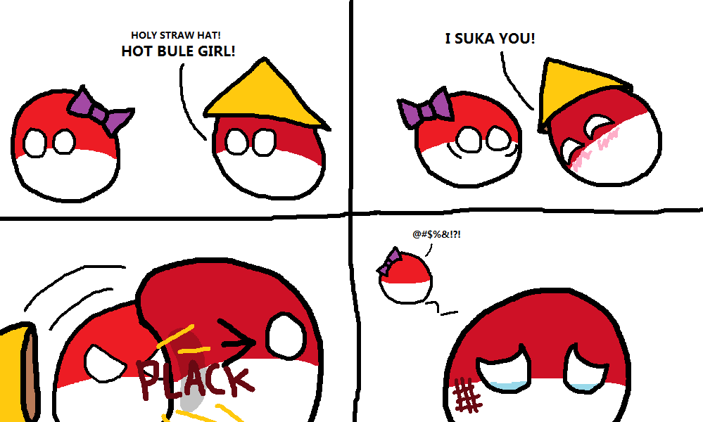

Indonesia
The archipelago country
by Ananto Y. Wicaksono
Some Fun Facts

Some Fun Facts
Some Fun Facts


Bird Inside Shield
Shield Inside Bird
Indonesia is an archipelago country, located between Asia and Australia, and between the Indian and the Pacific Ocean.
How many islands in Indonesia?
i) 1,000 - 5,000
ii) 5,000 - 10,000
iii) 10,000 - 25,0000
iv) 25,000 - 50,0000
According to a geospatial survey the National Coordinating Agency for Survey and Mapping, Indonesia has 13,466 islands. However, according to earlier survey by LAPAN, the Indonesian archipelago has 18,307 islands, and according to the CIA World Factbook, there are 17,508 islands.

"Unity in Diversity"
Bhinneka Tunggal Ika
Mostly people speak Indonesian (Bahasa Indonesia) combining with their own local languages (e.g., Javanese, Sundanese, and Balinese)
Indonesia Language is affected by some other languages such as Arabic (1,495 words), Dutch (3,280 words), English (1,610 words) and Mandarin (290 words)
Six official religions: Islam, Protestantism, Roman Catholicism, Hinduism, Buddhism and Confucianism. in 2017, ethnic religions must be recognised and included in an Indonesian identity card. Based on data collected by the Indonesian Conference on Religion and Peace (ICRP), there are about 245 unofficial religions in Indonesia.

There are 633 recognised ethnic groups in Indonesia. These are the six largest ethnic groups (Javanese, Sundanese, Batak, Sulawesi, Madurese, Betawi) that makes up more than two third of 237 million of the country's total population.
Nine world herigates has been recognized officially by The UNESCO (United Nations Educational, Scientific and Cultural Organization)
Cultural
- Borobudur Temple Compounds
- Cultural Landscape of Bali Province
- Ombilin Coal Mining Heritage of Sawahlunto
- Prambanan Temple Compounds
- Sangiran Early Man Site

Natural
- Komodo National Park
- Lorentz National Park
- Tropical Rainforest Heritage of Sumatra
- Ujung Kulon National Park

Site on the tentative list
- Bunaken National Park
- Raja Ampat Island
- Wakatobi National Park
- and more...

World Seven Summits

Indonesia Seven Summits


Seven Favourite Indonesian Cuisine
- Indonesian Satay
- Beef Rendang
- Fried Rice
- Nasi Rawon
- Gado Gado
- Pempek
- Bakso
Indonesian Satay

Beef Rendang / Nasi Padang

Gado Gado (Indonesian Salad with Peanut Sauce)


Thank You
Access my presentation for free https://ansuf.github.io/eng
it's open source !